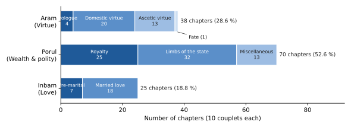
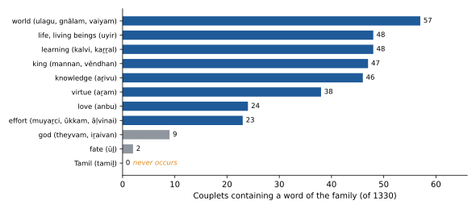
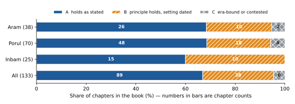

Abstract—The Thirukkural of Thiruvalluvar, 1330 couplets in 133 chapters, is called Ulaga Pothu Marai, the common scripture of the world. Admirers often claim that its teaching holds for the past, the present and the future. This paper tests that claim instead of assuming it. Every one of the 133 chapters is placed in one of three tiers. Tier A holds as stated today. In Tier B the principle holds but the setting is of its age, such as a king, a fortress or an ascetic. In Tier C the framing is bound to its era or contested today. On this reading, 89 chapters (66.9 %) fall in Tier A, 38 (28.6 %) in Tier B and only 6 (4.5 %) in Tier C. Even under a deliberately severe re-scoring, more than 88 % of the work stays usable without change of principle. A word-level survey of the Tamil text supports the claim of universality. The word Tamil never occurs. No king, kingdom, place or sect is named. Forms of ulagu (world) occur in 57 couplets and uyir (life, living beings) in 48. Eighty-eight couplets are then quoted in full, with a modern English translation, and read across twelve domains of present-day life: ethics, communication, learning and scientific temper, governance, management, economics, health, environment, relationships, resilience, love and equality. The Tier C chapters are examined openly: the role of women, kingship, war, fate, diet and lineage. A method of principle extraction is proposed that keeps the text honest without discarding it. Finally, the Kural is read against six challenges of the coming decades, including artificial intelligence, misinformation, climate and water stress, ageing populations, automation and global governance. A comparison with Confucian, Buddhist, Greek, biblical and Indian statecraft traditions shows that the Kural agrees with them on core principles. Where it differs, it is more integrated and more insistent that power answer to ethics. A code of practice for engineers and scientists is drawn from the text. The paper concludes that the Kural’s claim to timelessness rests on its level of abstraction, its grounding in observed human behaviour, its compression into memorable form and its deliberate silence on identity. These are design choices, and they explain why a text perhaps fifteen centuries old still reads like advice for tomorrow.
Index Terms—Thirukkural, Thiruvalluvar, Ulaga Pothu Marai, Tamil literature, ethics, governance, management, universality, timelessness, artificial intelligence ethics, principle extraction.
Few books survive their century. Fewer survive their civilisation. The Thirukkural has done both. It was composed in the Tamil country somewhere between the last centuries BCE and about 500 CE [1]–[3]. It has been copied on palm leaf, printed from 1812 and recited in schools for generations, and it has been translated into more than forty languages [4]. Tamil tradition gives it many names. One of them is Ulaga Pothu Marai (உலகப் பொதுமறை), the common scripture of the world. The name makes two claims. The first is that the work belongs to no single people, sect or country. The second is that its teaching does not expire: what was true for its first readers remains true for us and will remain true for those who follow.
Claims of this kind are easy to make and hard to test. A reader who loves the text will find in it whatever the present needs. A sceptic will point to couplets that plainly belong to an age of kings, fortresses and arranged households. Both are partly right. This paper tries to be fair to both by putting the claim on a measurable footing.
The approach is borrowed from engineering. An engineer asked whether an old design is still fit for purpose does not answer with praise or dismissal. The engineer separates the requirement from the implementation. The requirement may be timeless (“the bridge must carry the load safely”) while the implementation is dated (“use wrought-iron rivets”). The same separation can be applied to a moral text. A couplet that tells a king to keep his sceptre straight carries a dated implementation, the king, and a durable requirement, the rule of law. If most of the Kural survives this separation with its requirements intact, the claim of timelessness is supported by evidence rather than sentiment.
The paper makes five contributions.
A note on translation. All English renderings in this paper are new, modern and deliberately plain. They aim at the sense of each couplet as a present-day reader needs it, not at reproducing its metre. Where the reading depends on a choice among the classical commentators, the choice is noted. The Tamil text and the transliterations are taken from an open digital edition of the Kural [12], checked against the printed tradition.
Almost nothing reliable is known about the author. Tradition calls him Thiruvalluvar, “the revered Valluvar”. Later legends give him a birthplace in Mylapore, a weaver’s trade and a wife named Vasuki. Modern scholarship treats these accounts as hagiography rather than history [2], [5]. The text itself offers no autobiography, no patron and no dedication. The silence is part of its character, and Section IV returns to it.
The date is disputed. Traditional scholars who place the Kural at the close of the third Sangam date it as early as 300 BCE. Others place it in the first century BCE or the first century CE [1]. The Government of Tamil Nadu has adopted 31 BCE as the epoch of the Thiruvalluvar Aandu, the Valluvar era used in official calendars [1]. Linguistic analysis points later. Kamil Zvelebil noted grammatical innovations absent from the older Sangam anthologies and a body of loan words. He concluded that the work is post-Sangam and best placed around 450–500 CE [2], [3]. Stuart Blackburn describes a date of about 500 CE as the current scholarly consensus [5].
For the purpose of this paper the exact date matters less than its order of magnitude. On any account the Kural is between about fifteen hundred and more than two thousand years old. It was written before the printing press, the nation state, the corporation, the scientific method in its modern form and the computer. A text of that age that still gives useful advice on hiring, budgeting, public speaking and medicine deserves careful study. Whether it was written in 100 BCE or 500 CE does not change that.
The Kural carries more honorific names than almost any other Tamil work, and the names record how it has been received.
The last name is the one this paper examines. Marai (scripture, sacred lore) gives the work the authority of a canon. Pothu (common, shared, public) denies it to any one owner. The combination is unusual. Most scriptures are scriptures of someone: of a faith, a lineage, a nation. The Kural’s admirers chose a name that says it belongs to everyone.
A Tamil verse tradition lists ten medieval commentators on the Kural, of whose work five survive in whole or part. The most influential is Parimelazhagar (c. 13th century). His commentary fixed the standard division of the books into sections (iyal) and shaped how the text was read for seven centuries [6]. Norman Cutler has shown that the commentaries did more than explain the text: they helped create the Kural as a unified, canonical work [6]. In the twentieth century new commentaries in plain modern Tamil, by Mu. Varadarasanar, Solomon Pappaiah, M. Karunanidhi and many others, carried the text into mass education [12].
Translation began early. The Jesuit missionary Constantius Joseph Beschi rendered the books on virtue and wealth into Latin around 1730. In his notes he compared the couplets with the maxims of Seneca [4], [7]. Karl Graul published a German translation in 1856 [4]. George Uglow Pope’s complete English verse translation of 1886 brought the work to the wider Western public and reprinted Beschi’s Latin [7]. V. V. S. Aiyar’s English prose translation of 1916 [17] was among the first by an Indian translator to win a wide readership. By 2014 the Kural had been translated into more than 42 languages, with about 57 English versions. In 2021 the Central Institute of Classical Tamil announced a programme to translate it into 102 world languages [4].
One chain of reception deserves particular mention because it shows the work crossing every boundary its name implies. In December 1908 Leo Tolstoy, in Russia, wrote A Letter to a Hindu in reply to the Indian nationalist Tarak Nath Das. In it he quoted six couplets of what he called “the Hindu Kural”. All six come from the chapter on not doing harm to others (Chapter 32, Kurals 311–315 and 319) [8]. The young M. K. Gandhi, then in South Africa, read the letter, wrote to Tolstoy for permission to publish it and translated it into Gujarati. He later studied the Kural itself [8], [9]. A Tamil text on non-retaliation thus travelled through a Russian novelist to shape the method of an Indian independence movement. The best single illustration of the phrase Ulaga Pothu Marai may be that journey.
The Kural is not only a classic studied in universities; it is woven into the public life of Tamil Nadu and, increasingly, of India. For decades, buses of the Tamil Nadu state transport corporations have carried couplets with their meanings [19], so that millions of passengers read a kural on their daily journey. Valluvar Kottam in Chennai, a memorial built in the form of a temple chariot and inaugurated in 1976, carries bas-relief panels of all 133 chapters [20]. At Kanyakumari, at the southern tip of the subcontinent, the Thiruvalluvar Statue was unveiled on 1 January 2000. Its total height of 133 feet stands for the 133 chapters, and its 38-foot pedestal for the 38 chapters of the book on virtue [21]. In 2016 the Madurai Bench of the Madras High Court directed the state government to teach the Kural as a separate subject from Class 6 to Class 12 [22]. The direction covered the 108 chapters of the first two books and left out the book on love. A Thirukkural Week is now observed every January [23].
The Kural is also quoted where public money is decided. In the Union Budget speech of 1 February 2020, the Finance Minister of India quoted Kural 738 on the five ornaments of a country [24]:
A couplet perhaps fifteen centuries old was used as the framework for a modern national budget, and it fitted. That is a small but telling piece of evidence for the claim this paper examines.
The Kural is organised with a regularity that an engineer will recognise at once. It has three books (pāl). Each book is divided into sections (iyal), each section into chapters (adhikāram), and every chapter contains exactly ten couplets (kural). There are 133 chapters and 1330 couplets. No chapter is longer or shorter than the rest. Table I gives the hierarchy in the standard division of Parimelazhagar [6].
| Book | Section (iyal) | Chapters | No. of chapters | Couplets |
|---|---|---|---|---|
| Aram (அறம்), Virtue | Prologue (Pāyiraviyal) | 1–4 | 4 | 40 |
| Domestic virtue (Illaraviyal) | 5–24 | 20 | 200 | |
| Ascetic virtue (Thuravaraviyal) | 25–37 | 13 | 130 | |
| Fate (Ūzhiyal) | 38 | 1 | 10 | |
| Porul (பொருள்), Wealth and polity | Royalty (Arasiyal) | 39–63 | 25 | 250 |
| Limbs of the state (Angaviyal) | 64–95 | 32 | 320 | |
| Miscellaneous (Ozhibiyal) | 96–108 | 13 | 130 | |
| Inbam (இன்பம்), Love | Pre-marital love (Kalaviyal) | 109–115 | 7 | 70 |
| Married love (Karpiyal) | 116–133 | 18 | 180 | |
| Total | 9 sections | 133 | 1330 |
The distribution is itself a statement. More than half the work, 70 of 133 chapters (52.6 %), is given to porul: wealth, polity, administration, friendship and practical life. Virtue takes 38 chapters (28.6 %) and love 25 (18.8 %) (Fig. 1). A text often described as “ethical” is in fact mostly about how to act effectively in the world. The ethics is the foundation, laid first; the bulk of the building is practice.

The ordering follows a widening circle. It begins with the individual’s foundations (praise of the first cause, rain, the disciplined person, virtue). It moves to the household (domestic life, partnership, children, hospitality), then to the inner discipline of the self (truth, non-violence, freedom from craving), then to the institution (the head of state, ministers, army, alliances), then to society at large (honour, courtesy, farming, poverty). It ends with the most private relation of all, love between two people. In systems terms the text is decomposed top-down, from foundation through household and state to the person, much as a work breakdown structure moves from the system to its subsystems.
Each couplet is a kural venba: two lines, the first of four metrical feet (cīr) and the second of three. Seven feet, often seven words, carry a complete thought. The whole work therefore runs to about 1330 × 7 = 9310 feet. That is shorter than many single chapters of a modern management book. Within that budget it covers ethics, statecraft, economics, medicine, friendship and love.
The form forces the author to state each idea at its most general. Seven words leave no room for a case history, a named example or a local detail. They leave room only for the principle and one image. This is why so many couplets read as if written for any age: the metre filters out the particular. In Section XII it is argued that this compression is the single most important reason for the Kural’s durability.
The form also suits memory. Two short lines bound by line-initial rhyme (edhugai) and alliteration (mōnai) are easy to learn by heart and hard to corrupt. A memorised couplet with a dropped or changed word breaks its metre audibly. The metre therefore acts like a checksum, and recitation in schools has carried the text across centuries with remarkable stability.
Why exactly ten couplets per chapter? A chapter on patience, for example, states the same principle ten times from ten angles: an image from nature, a contrast with its opposite, a consequence, a counsel, a paradox. To an engineer this resembles a requirement verified by ten test cases. Each couplet stands alone and can be quoted alone. Together they bound the idea from every side so that it cannot easily be misread. Redundancy is the engineer’s standard defence against loss and noise. The Kural applies it to meaning.
Universality can be argued from what a text says. It is argued more convincingly from what the text consistently leaves out. A word-level survey of the 1330 couplets was made for this paper. It used prefix matching on the Tamil words of the open digital text [12], so the counts are approximate, but the pattern is unmistakable (Fig. 2).
The few mythological allusions that do appear are incidental images, not doctrine. Kural 25 cites Indra as a witness to the power of self-control. Kural 610 alludes to the god who measured the worlds in three strides. Kural 617 names the goddess of fortune as dwelling with the industrious. Kural 1103 asks whether the heaven of the lotus-eyed god is sweeter than sleep in a lover’s arms. These are figures of speech familiar to the first audience. Not one of them asks the reader to adopt a belief, and Kural 1103 uses its allusion to rank human love above heaven.
In place of particular names the Kural uses universal ones. It speaks to and about ulagu (the world), which with its synonyms gnālam and vaiyam appears in about 57 couplets. It speaks of uyir (life, all living beings) in about 48. Its key nouns are virtue (aram, about 38 couplets), knowledge (arivu, about 46), learning (about 48), love (anbu, about 24) and effort (about 23). The vocabulary of the work is the vocabulary of any human society.

The most direct statement of this universalism comes in the chapter on greatness:
In a society that was already ranked by birth, this couplet places worth in conduct and work, not lineage. It is echoed in Kural 134. Even the Brahmin, at the top of the ritual order, can recover forgotten scripture but cannot recover lost conduct: his standing by birth depends on how he lives.
A practical test of universality is whether people of different identities can all accept a text as their own. The Kural passes it unusually well. Jain scholars point to its emphasis on non-violence and vegetarianism. Shaiva and Vaishnava commentators read the prologue in their own terms. Christian missionaries from Beschi to Pope admired it as a moral code close to their own [7]. Rationalist and Dravidian-movement writers of the twentieth century embraced it as a secular, egalitarian classic. A text that can be claimed by all these readers at once must be making few demands that divide them. That is the practical meaning of pothu, common.
To test whether the Kural’s teaching is “valid for the past, present and future”, each unit of the text is placed in one of three tiers (Table II).
| Tier | Definition | Test question | Example |
|---|---|---|---|
| A: Universal | The couplet or chapter holds as stated, in any society, without reinterpretation. | Could this be printed unchanged in a modern handbook? | Kural 391: learn thoroughly, then live by what you learn. |
| B: Enduring principle, dated setting | The principle holds, but it is expressed through an institution, custom or image of its age (king, fortress, ascetic, army). | Does the principle survive if the setting is replaced by its modern equivalent? | Kural 546: the king’s straight sceptre wins, not his spear (read today: rule of law, not force). |
| C: Era-bound or contested | The framing itself depends on values that much of the modern world rejects or disputes. | Must the framing be set aside, not merely translated, to use the couplet today? | Kural 55: the wife who worships her husband instead of God. |
The tiers are not a ranking of literary merit. A Tier B couplet on fortresses may be finer poetry than a Tier A couplet on gratitude. The tiers measure one thing only: how much interpretive work a modern reader must do to use the teaching.
Each domain studied in Section VI is read through three lenses.
A teaching that survives all three lenses with its principle intact is timeless in the only sense that can be tested: it has been useful in every period we can observe, and it addresses the problems we can foresee.
The chapter is the unit of classification for the full-text survey, because the ten couplets of a chapter share one theme. Each chapter was read in full and assigned the tier that fits the chapter as a whole. Where the setting is dated, the dated element and the surviving principle were recorded (Table IV).
Three limitations should be stated plainly. First, the classification is interpretive and was made by one analyst. Another reader would move some chapters across tier boundaries, especially between A and B. Section VII-B therefore tests how far the conclusion depends on such judgements. Second, classifying by chapter hides variation inside a chapter. A Tier A chapter can contain one dated couplet, and a Tier C chapter can contain a sound one. Third, “modern values” are not uniform across the world. The tests in Table II take as their reference the broad consensus expressed in documents such as the Universal Declaration of Human Rights [10] and the Sustainable Development Goals [11], not any one society’s customs.
Three couplets show how the test questions of Table II are applied in practice.
Kural 478 (outflow must not exceed income). Could it be printed unchanged in a modern handbook? Yes. It names no currency, institution or custom, and its rule is exactly the solvency condition taught in any course on personal or corporate finance. The couplet is Tier A, as is its chapter, Knowing strength (48).
Kural 742 (water, land, hills and forest make a real defence). Could it be printed unchanged? No; a modern reader does not build fortresses. Does the principle survive if the setting is replaced by its modern equivalent? Yes. Replace “fortress” with “a resilient region” or “a secure supply chain”, and the couplet names the natural assets that resilience planning protects. The couplet is Tier B, as is its chapter, The fortress (75).
Kural 55 (the wife who worships her husband instead of God). Could it be printed unchanged? No. Does the principle survive translation of the setting? Not as stated, because the problem is not the setting but the one-way direction of duty. Must the framing be set aside? Yes. The recoverable principle, that partnership and fidelity sustain a home, survives only when applied to both partners (Section VIII-A). The couplet is Tier C, as is its chapter, The worth of a wife (6).
The three cases show the logic of the tiers. A Tier B couplet needs only translation of its setting. A Tier C couplet needs its framing rejected before a principle can be recovered.
This section reads the Kural through the three time lenses, domain by domain. For each domain the couplets that carry its core teaching are given in full, followed by an analysis of their meaning then, now and in the future. Table III at the end summarises the results.
The Kural starts with the person before the institution, and with the mind before the act. Its definition of virtue is short and radical.
Past. In a culture rich in ritual, this couplet moved virtue from outward observance to inner state. Ceremony, display and loud piety are dismissed as ākula nīra, mere noise.
Present. Modern ethics, whether professional codes, corporate compliance or research integrity, keeps rediscovering the same point. Rules and audits cannot substitute for intention. An organisation can tick every box of a compliance checklist and still be corrupt. Kural 34 says why: the checklist measures the noise, not the mind.
Future. As more of life is mediated by systems that reward visible signals such as likes, ratings and badges, the gap between display and character will widen. The couplet is a standing reminder that the signal is not the substance.
The Kural measures love by what it gives away, not by what it feels:
On conduct, it sets the bar above survival itself:
The chapter on patience contains one of the most quoted images in Tamil:
The progression from 151 to 152, from bearing to forgiving to forgetting, is a complete account of how to end a conflict. Modern psychology describes rumination, the replaying of a grievance, as a driver of stress and poor health. The Kural’s counsel to forget the wrong, not merely to forgive it, anticipates that finding by more than a millennium.
The chapter on not doing harm (Chapter 32) is the one Tolstoy quoted [8]. Its logic runs from personal ethics to consequences:
Couplet 315 is the hinge of the chapter and perhaps of the whole book. It makes empathy the purpose of knowledge, not an optional virtue alongside it. A learned person without empathy, in the Kural’s terms, has learned nothing useful. Couplet 319 states as an observed law what other traditions state as doctrine: harm returns, and quickly. The Kural presents it as a fact about human societies, not a promise of supernatural reward. In a networked world, where a cruel act, a fraud or a broken promise can come back within hours through a screenshot or a review, the “afternoon” of 319 has come closer.
Character, in the Kural, is also measured by how a person repays what others have done for them. The chapter on gratitude (11) is among the most quoted in Tamil households.
The four couplets form a theory of reciprocity. The value of help depends on its timing (102) and on whether it was owed (101), not only on its size. The proper response is to magnify it in memory (104). Ingratitude is placed below every other failing (110), because it destroys the trust on which all cooperation rests. Game theorists who study how cooperation survives among strangers reach a related conclusion: societies that remember and return favours sustain cooperation; those that forget them do not.
The chapter on duty to society (22) extends reciprocity from persons to the community.
Present and future. Kural 211 describes the ethic of public service, open-source software, volunteer work and the maintenance of shared resources: contributions made without expectation of return, on which everyone depends. As more of the world’s infrastructure, from encyclopaedias to code libraries, rests on unpaid contribution, the rain of Kural 211 becomes a more exact image.
Tier. Every chapter in this domain falls in Tier A. These are the clearest examples of the Kural’s timeless core.
The Kural devotes whole chapters to pleasant speech (10), avoiding backbiting (19), avoiding empty talk (20) and power of speech (65). Its teaching on speech is practical: it describes what words do to the speaker and to the listener.
Past. For a royal adviser or a householder, careless speech could cost a post, a friendship or a life. Chapter 65 is addressed to the minister who must persuade a king.
Present. Kural 645 is a compact rule for technical and professional writing: say it in the strongest form, and do not speak until you have that form. Kural 129 describes what workplace psychologists now call the persistence of verbal injury. A harsh word from a superior is remembered long after a physical injury would have healed.
Future. Speech is now written, permanent and searchable. A careless word on a social platform is no longer forgotten by the afternoon; it is archived. Kural 127 becomes more urgent, not less, when every utterance is recorded. Kural 129 reads as a description of online abuse, whose damage to mental health is now well documented.
Tier. A.
The Kural’s chapters on learning (40), ignorance (41), listening (42) and knowledge (43) form a complete theory of education. For a scientific reader they are the most striking part of the book.
The couplet has three clauses: choose well, learn thoroughly, then apply. The third clause is what separates education from information. Learning that does not change conduct is incomplete.
Kural 396 is an exact image of how expertise grows: not linearly, but by opening new sources the deeper one goes. Kural 397 is a manifesto for lifelong learning, which international bodies now treat as an economic necessity. It also contains a surprisingly modern idea: learning makes a person mobile, at home anywhere.
The two couplets that matter most for science come from different chapters but share their second line, meypporul kāṇbadhu arivu: to see the true substance is knowledge.
Past. In a society that deferred to rank, Kural 423 was bold. It says the authority of the speaker does not settle the truth of the statement. Whether the source is a king, a sage or a stranger, the claim must be examined.
Present. Kural 355 and Kural 423 together state the two pillars of the scientific method. The first is to separate appearance from reality: measure, do not assume. The second is to judge the claim, not the claimant: peer review, replication, verification. A test engineer who reads a sensor value does not trust it because the instrument is expensive. The engineer checks it against a calibration. That is Kural 423 applied.
Future. Generated text, synthetic images and coordinated misinformation have made the authority of a source easy to fake. Kural 423 is perhaps the single most useful couplet for a citizen of the 2030s. It does not tell us whom to trust. It tells us to verify regardless of whom we trust.
Tier. A, throughout.
The 25 chapters on royalty are addressed to a king. This is the domain where a modern reader most expects the Kural to have dated, and where the separation of principle from setting matters most.
Past. The sceptre (kōl) was the symbol of justice; the spear (vēl) of force. Kural 546 says justice, not force, secures a ruler. Kural 552 goes further. It compares an extortionate ruler to a highway robber, a striking thing to write in a monarchy.
Present. Replace “king” with any holder of public power: a government, a regulator, the head of a public institution. The principle of 546 is the rule of law. The principle of 552 is that taxation must be lawful and proportionate, or it is theft with a uniform. Both are now constitutional commonplaces, but they were not commonplace when written.
Kural 448 is a theory of institutional failure. It locates the danger in the absence of internal critics, not in external enemies. Engineering organisations know this as the value of independent design review and of a “red team”. The corporate collapses of the last century have shown it again and again: a leader surrounded by people who cannot say no will fail without outside help.
The chapter on kindly regard (kaṇṇōttam, Chapter 58) asks the ruler to temper justice with sympathy. Kural 571 claims that the world itself survives because people in power look on others with kindness. The chapter on the cruel sceptre (56) and the chapter on not ruling by terror (57) complete the argument from the other side.
The Kural’s definition of a good country is entirely functional:
Future. Set Kural 734 beside the United Nations Sustainable Development Goals [11]. Zero hunger (Goal 2), good health (Goal 3) and peace (Goal 16) are three of the seventeen goals, and they are exactly the three conditions of the couplet. A definition of national success written perhaps fifteen centuries ago and the agreed development agenda of 193 states name the same priorities.
Tier. Mostly B. The setting (king, sceptre, court) is dated; the principles (rule of law, lawful revenue, internal criticism, oversight of officials, public welfare as the test of government) are intact and in several cases ahead of their time.
The chapters on deliberate action (47), knowing strength (48), time (49), place (50), selecting people (51–52), and the qualities of action (66–68) form a management manual. Each couplet translates directly into modern practice.
Kural 461 is a cost–benefit analysis in seven words, including the step most often forgotten: the net return after losses. Kural 467 is the case for front-loaded design review: decide after thinking, not before. Kural 471 is a four-factor feasibility study of the task, one’s own capability, the competition and one’s partners. It is a forerunner of the SWOT analysis taught in business schools.
On people, the Kural anticipates the main ideas of modern human-resource practice.
Kural 504 is a balanced appraisal: neither halo effect nor fault-finding, but a weighing. Kural 505 makes performance, not birth or claims, the measure. Kural 510 describes both failures of trust: blind delegation and micromanagement of the proven. Kural 517 gives the remedy. Match the person, the task and the method, then truly delegate. A modern manager could run a team on these four couplets alone.
On execution, the Kural is blunt about the gap between talk and work:
Past. These were counsels for ministers running campaigns, public works and diplomacy.
Present. They describe what project management calls planning, feasibility, resourcing, delegation and execution. The ordering also matches: 467 (think first), 671 (then decide firmly), 664 (execution is harder than planning).
Future. As routine tasks pass to software, human work will concentrate in judgement: deciding what to do, whom to trust and when to act. These are exactly the subjects of this group of chapters. Management by the Kural may become more relevant as management by procedure is automated.
Tier. A.
The Kural is no ascetic tract on money. A whole chapter (76) is titled Ways of Making Wealth, and it opens without apology.
Kural 478 is a cash-flow principle. Solvency depends on the relation between inflow (āgāru, the way in) and outflow (pōgāru, the way out), not on the size of either. Households, firms and governments that ignore it fail at every income level. Corporate collapses driven by leverage are, in the end, failures of Kural 478.
The Kural also contains one of the most remarkable statements in any classical text on social justice:
Past. Here Valluvar curses the creator of a world in which people must beg to live. For a text that opens by praising the first cause, this is an extraordinary sentence. It places human dignity above even the divine order.
Present. The couplet is a moral foundation for social security, poverty alleviation and the idea that destitution is a failure of the system, not of the poor.
Future. If automation displaces large classes of work, the question of how people without work will live with dignity will become central. Kural 1062 gives the Kural’s answer: a world arranged so that people must beg is a badly made world, and its makers stand condemned.
Tier. Mostly A; the chapter on farming (104) is B, because its agrarian setting is dated while its principle, the primacy of food production, is not (Table IV).
The chapter on medicine (95) is ten couplets on preventive health. Its opening is unusually confident:
Past. These couplets reflect the preventive emphasis of traditional Indian medicine: diet, moderation and attention to digestion.
Present. Kural 948 is a four-step diagnostic procedure: symptom, root cause, remedy, skilled application. Taiichi Ohno’s “five whys” in the Toyota Production System [13], the root-cause analysis taught in every quality course and the failure investigation of an engineering test rig all follow the same order. The Kural’s warning is implicit: treat the root, not the symptom. Kural 950 is a systems view of care. Outcomes depend on four components working together, not on the doctor alone. Modern health systems research says the same.
Future. Ageing populations and the rise of chronic lifestyle diseases are shifting medicine from cure to prevention. Kural 942 and 945, eat in measure and only when the last meal is digested, are a short form of the dietary advice public-health bodies now give. The chapter on not drinking (93) is in the same line: the World Health Organization stated in 2023 that no level of alcohol consumption is safe for health [14].
Tier. A.
The second chapter of the whole work, before any chapter on human conduct, is in praise of rain.
Past. Placing rain second, right after the first cause, made the dependence of all human order on water an article of faith. Kural 742 describes the natural defences of a fortress. Kural 737 lists the physical assets of a kingdom.
Present. Read with “resilience” in place of “fortress”, Kural 742 names four of the natural assets that environmental planners now protect: water bodies, land, watersheds and forests. Kural 737 distinguishes iru punal, two kinds of water (commentators read them as ground water and rain-fed surface water). It is a two-source water security model that modern water management has had to relearn.
Future. Water stress, deforestation and climate change make Kural 20 a literal statement of the coming century’s central problem. Its logic is correct: without a stable water cycle, social order itself fails.
Kural 322 extends the concern from people to pal uyir, the many forms of life. In a period of mass extinction, the protection of biodiversity is no longer a pious option. Kural 322 ranks it first among duties.
Tier. Rain (Chapter 2) is A. Land and fortress (74–75) are B, with the principle undiminished.
Seventeen chapters (79–95) deal with friendship, false friendship and enmity. Two couplets define the ideal.
Kural 784 is the same idea as Kural 448, applied to private life. A friend’s value lies in honest correction, not agreement. Kural 788 defines support as immediate and instinctive, like a reflex. Together they describe what organisational researchers call psychological safety and mutual support in high-performing teams. Members can tell each other uncomfortable truths, and they help without being asked.
Tier. A.
The Kural has a chapter on fate (ūzh, Chapter 38), and it is the most debated chapter in the book. It opens:
Twenty-four chapters later, the chapter on effort (62) ends:
The word ūzh (fate) itself appears in only two of the 1330 couplets, 380 and 620. In the second, effort defeats it. The Kural states the power of fate once and its defeat once, and gives a whole chapter’s weight to effort. Section VIII returns to this tension. For the present, the Kural’s practical counsel on resilience is clear:
Present and future. Kural 619 contains a precise and humane idea. Outcomes are uncertain, but effort always earns something: skill, experience, character. The world is volatile and careers last longer than ever, so the ability to keep effort independent of outcome is a core skill. Kural 619 states it.
Tier. Effort chapters A; fate chapter C (Section VIII-D).
The third book, on love, is often omitted from school editions and older translations; Beschi and Drew did not translate it [4]. That is a loss, because it contains some of the most delicate love poetry in any language. Its 25 chapters are dramatic monologues, mostly of the heroine and the hero, through courtship, union, separation and reunion.
Past. The love poetry follows the conventions of classical Tamil agam (inner) poetry: unnamed lovers, situations rather than stories.
Present and future. The emotions are universal. Kural 1110 compares love to learning: every advance reveals how much remains unknown. It is perhaps the most intellectual love couplet ever written, and it makes knowing another person an endless inquiry. Kural 1330, the last couplet of the book, ends a work on virtue and statecraft with a lovers’ quarrel and its resolution. The Kural’s last word is reconciliation.
Tier. Mostly A; the chapters built on the convention of the waiting heroine are B (Section VIII-A).
Kural 972 (Section IV-B) is the centre of this domain. Two more couplets complete it.
Kural 1033 inverts the social hierarchy of its time. It places the cultivator, who lives by his own labour, above those who live by serving others. Its modern principle is the dignity of productive work.
Future. Article 1 of the Universal Declaration of Human Rights says that all human beings are born free and equal in dignity and rights [10]. Kural 972 says that all beings are equal at birth and differ only by their work. The two statements are separated by perhaps fifteen centuries.
Tier. A.
Table III collects the findings. In ten of the twelve domains the core teaching falls in Tier A. In governance it falls in Tier B, because it is addressed to a king, but its principles anticipate modern constitutional ideas. In love and family it is A with a B convention. None of the twelve domains rests on Tier C material.
| Domain | Key couplets | Past (original setting) | Present (2026) | Future | Tier |
|---|---|---|---|---|---|
| Inner character | 34, 72, 101–110, 131, 151, 152, 211, 311–319 | Virtue beyond ritual | Integrity beyond compliance | Substance over online signals | A |
| Speech | 100, 127, 129, 645 | Adviser before a king | Professional and technical communication | Permanent digital speech, online abuse | A |
| Learning and science | 391, 396, 397, 411, 355, 423 | Learning against rank | Scientific method, lifelong learning | Verification in an age of synthetic content | A |
| Governance | 448, 520, 546, 552, 571, 734 | Duties of a king | Rule of law, lawful taxation, oversight | Development goals: hunger, health, peace | B |
| Management | 461, 467, 471, 484, 504–517, 664–671 | Minister’s counsel | Cost–benefit, feasibility, HR, delegation | Human judgement as the core of work | A |
| Economics | 221, 226, 478, 754, 759, 1062 | Royal and household wealth | Cash flow, ethical earning, welfare | Dignity in an automated economy | A |
| Health | 942, 945, 948, 950 | Diet and moderation | Root-cause analysis, systems of care | Prevention, ageing societies | A |
| Environment | 20, 322, 737, 742 | Rain, fortress, kingdom | Water and resilience planning | Climate, water stress, biodiversity | A/B |
| Relationships | 784, 788 | Loyal allies | Psychological safety in teams | Human ties in a mediated world | A |
| Resilience | 594, 596, 611, 619, 620 | Effort against fate | Effort independent of outcome | Volatile, long careers | A |
| Love and family | 45, 66, 1110, 1289, 1330 | Classical agam conventions | Universal emotions | Love as endless inquiry | A/B |
| Equality | 134, 972, 979, 1033 | Worth by conduct, not birth | Equal dignity (UDHR) | Dignity of work after automation | A |
All 133 chapters were classified by the method of Section V. The full classification, with the dated element and the surviving principle for every Tier B and Tier C chapter, is given in Table IV. The totals are:
Two of every three chapters can be used today exactly as written. Ninety-five chapters in a hundred carry a principle that survives the change from the Kural’s world to ours. Only six chapters, 60 couplets out of 1330, need their framing set aside rather than translated.
The distribution across the three books is shown in Fig. 3. Virtue (Aram) has 26 chapters in A, 10 in B and 2 in C. Wealth and polity (Porul) has 48 A, 18 B and 4 C; its B chapters are mostly those addressed to the king, the army and the fortress. Love (Inbam) has 15 A and 10 B and no chapter in C. Its B chapters are those built on the classical convention of the heroine waiting at home while the hero is away.

A pattern is visible. The Tier B material is concentrated where the Kural addresses an institution of its time: the monarchy, the ascetic order, the army, the agrarian economy. The Tier A material is concentrated where it addresses a person: the mind, speech, learning, friendship, effort, empathy. Institutions change; human nature changes very slowly. The Kural ages exactly where its subject ages.
Because the classification is interpretive, it is worth asking how much the conclusion depends on it. Consider a deliberately severe re-scoring.
Under this re-scoring, Tier A falls to 59 chapters (44.4 %), Tier B rises to 58 (43.6 %) and Tier C rises to 16 (12.0 %). Even so, 88 % of the work still carries a principle that a modern reader can use without rejecting it. The claim that the Kural’s teaching is substantially valid across time is robust to reasonable disagreement about individual chapters. The claim that every couplet is valid for all time is not, and the paper does not make it.
| No. | Book | Chapter (Tamil) | Chapter (English) | Tier | For B and C: dated element; surviving principle |
|---|---|---|---|---|---|
| 1 | Aram | கடவுள் வாழ்த்து | In praise of the first cause | B | theistic invocation; principle: humility before a first cause / foundations |
| 2 | Aram | வான்சிறப்பு | The excellence of rain | A | |
| 3 | Aram | நீத்தார் பெருமை | The greatness of renunciants | B | ascetic ideal; principle: respect for disciplined, selfless people |
| 4 | Aram | அறன் வலியுறுத்தல் | Assertion of the Strength of Virtue | A | |
| 5 | Aram | இல்வாழ்க்கை | Domestic Life | B | duties to ancestors and ascetics; principle: the household as society’s support base |
| 6 | Aram | வாழ்க்கைத் துணைநலம் | The worth of a wife | C | one-way duties of the wife; principle: partnership and mutual fidelity |
| 7 | Aram | மக்கட்பேறு | The Wealth of Children | B | son-centred wording; principle: children as the joy and legacy of a home |
| 8 | Aram | அன்புடைமை | The Possession of Love | A | |
| 9 | Aram | விருந்தோம்பல் | Hospitality | A | |
| 10 | Aram | இனியவை கூறல் | Pleasant speech | A | |
| 11 | Aram | செய்ந்நன்றியறிதல் | Gratitude | A | |
| 12 | Aram | நடுவு நிலைமை | Impartiality | A | |
| 13 | Aram | அடக்கம் உடைமை | The Possession of Self-restraint | A | |
| 14 | Aram | ஒழுக்கம் உடைமை | Good conduct | A | |
| 15 | Aram | பிறனில் விழையாமை | Not coveting another’s wife | B | addressed to men only; principle: fidelity binds both partners |
| 16 | Aram | பொறையுடைமை | Patience and forbearance | A | |
| 17 | Aram | அழுக்காறாமை | Not Envying | A | |
| 18 | Aram | வெஃகாமை | Not Coveting | A | |
| 19 | Aram | புறங்கூறாமை | Not Backbiting | A | |
| 20 | Aram | பயனில சொல்லாமை | Avoiding empty talk | A | |
| 21 | Aram | தீவினையச்சம் | Dread of Evil Deeds | A | |
| 22 | Aram | ஒப்புரவறிதல் | Duty to society | A | |
| 23 | Aram | ஈகை | Giving | A | |
| 24 | Aram | புகழ் | Renown | A | |
| 25 | Aram | அருளுடைமை | Compassion | A | |
| 26 | Aram | புலால் மறுத்தல் | Abstaining from meat | B | vegetarian norm; principle: do not cause suffering for appetite |
| 27 | Aram | தவம் | Penance | B | penance; principle: self-discipline and endurance |
| 28 | Aram | கூடா ஒழுக்கம் | Imposture | A | |
| 29 | Aram | கள்ளாமை | Not stealing | A | |
| 30 | Aram | வாய்மை | Veracity | A | |
| 31 | Aram | வெகுளாமை | Restraining Anger | A | |
| 32 | Aram | இன்னா செய்யாமை | Not doing harm | A | |
| 33 | Aram | கொல்லாமை | Not killing | A | |
| 34 | Aram | நிலையாமை | Impermanence | A | |
| 35 | Aram | துறவு | Renunciation | B | renunciation and rebirth; principle: freedom from craving |
| 36 | Aram | மெய்யுணர்தல் | Knowledge of truth | B | renunciation and rebirth; principle: freedom from craving |
| 37 | Aram | அவா அறுத்தல் | Curbing of Desire | B | renunciation and rebirth; principle: freedom from craving |
| 38 | Aram | ஊழ் | Fate | C | fate as supreme; contested by the Kural’s own chapter on effort |
| 39 | Porul | இறைமாட்சி | The greatness of a ruler | B | kingship; principle: qualities of any head of an institution |
| 40 | Porul | கல்வி | Learning | A | |
| 41 | Porul | கல்லாமை | Ignorance | A | |
| 42 | Porul | கேள்வி | Listening | A | |
| 43 | Porul | அறிவுடைமை | Possessing knowledge | A | |
| 44 | Porul | குற்றங்கடிதல் | Correcting faults | A | |
| 45 | Porul | பெரியாரைத் துணைக்கோடல் | Seeking wise counsel | A | |
| 46 | Porul | சிற்றினம் சேராமை | Avoiding bad company | A | |
| 47 | Porul | தெரிந்து செயல்வகை | Acting after deliberation | A | |
| 48 | Porul | வலியறிதல் | Knowing strength | A | |
| 49 | Porul | காலமறிதல் | Knowing the right time | A | |
| 50 | Porul | இடனறிதல் | Knowing the right place | A | |
| 51 | Porul | தெரிந்து தெளிதல் | Testing before trusting | A | |
| 52 | Porul | தெரிந்து வினையாடல் | Testing and employing | A | |
| 53 | Porul | சுற்றந் தழால் | Caring for kin | B | kin-based support; principle: cohesive teams and networks |
| 54 | Porul | பொச்சாவாமை | Vigilance | A | |
| 55 | Porul | செங்கோன்மை | The Right Sceptre | B | monarch’s sceptre; principle: rule of law, no tyranny, no terror |
| 56 | Porul | கொடுங்கோன்மை | The Cruel Sceptre | B | monarch’s sceptre; principle: rule of law, no tyranny, no terror |
| 57 | Porul | வெருவந்த செய்யாமை | Not ruling by terror | B | monarch’s sceptre; principle: rule of law, no tyranny, no terror |
| 58 | Porul | கண்ணோட்டம் | Kindly regard | A | |
| 59 | Porul | ஒற்றாடல் | Spies | B | royal spies; principle: intelligence under law, with verification |
| 60 | Porul | ஊக்கம் உடைமை | Energy | A | |
| 61 | Porul | மடி இன்மை | Freedom from sloth | A | |
| 62 | Porul | ஆள்வினை உடைமை | Effort | A | |
| 63 | Porul | இடுக்கண் அழியாமை | Courage in adversity | A | |
| 64 | Porul | அமைச்சு | The minister | B | royal minister; principle: the competent, honest adviser |
| 65 | Porul | சொல்வன்மை | Power of speech | A | |
| 66 | Porul | வினைத் தூய்மை | Purity in Action | A | |
| 67 | Porul | வினைத்திட்பம் | Power in Action | A | |
| 68 | Porul | வினை செயல்வகை | Modes of Action | A | |
| 69 | Porul | தூது | The Envoy | B | envoy of a king; principle: diplomacy and negotiation |
| 70 | Porul | மன்னரைச் சேர்ந்து ஒழுகல் | Conduct before rulers | B | courtier’s conduct; principle: working with those in authority |
| 71 | Porul | குறிப்பறிதல் | Reading intentions | A | |
| 72 | Porul | அவை அறிதல் | Knowing the assembly | A | |
| 73 | Porul | அவை அஞ்சாமை | Fearlessness before the assembly | A | |
| 74 | Porul | நாடு | The country | B | kingdom and fortress; principle: resource and resilience security |
| 75 | Porul | அரண் | The fortress | B | kingdom and fortress; principle: resource and resilience security |
| 76 | Porul | பொருள் செயல்வகை | Ways of making wealth | A | |
| 77 | Porul | படை மாட்சி | The army | B | royal army; principle: disciplined, loyal capability |
| 78 | Porul | படைச் செருக்கு | Military spirit | C | glory of dying in battle |
| 79 | Porul | நட்பு | Friendship | A | |
| 80 | Porul | நட்பாராய்தல் | Testing friendship | A | |
| 81 | Porul | பழைமை | Old friendship | A | |
| 82 | Porul | தீ நட்பு | Bad friendship | A | |
| 83 | Porul | கூடா நட்பு | False friendship | A | |
| 84 | Porul | பேதைமை | Folly | A | |
| 85 | Porul | புல்லறிவாண்மை | Conceit of ignorance | A | |
| 86 | Porul | இகல் | Hostility | A | |
| 87 | Porul | பகை மாட்சி | Strength of enmity | B | rival kings; principle: handling competition and conflict |
| 88 | Porul | பகைத்திறம் தெரிதல் | Knowing the nature of enmity | B | rival kings; principle: handling competition and conflict |
| 89 | Porul | உட்பகை | Enmity within | A | |
| 90 | Porul | பெரியாரைப் பிழையாமை | Not offending the great | B | do not offend kings and sages; principle: respect power and expertise |
| 91 | Porul | பெண்வழிச் சேறல் | Being led by women | C | “being led by women” framed as weakness |
| 92 | Porul | வரைவின் மகளிர் | Women of no fixed attachment | C | women in sex work blamed; modern view sees exploitation |
| 93 | Porul | கள்ளுண்ணாமை | Not drinking | A | |
| 94 | Porul | சூது | Gambling | A | |
| 95 | Porul | மருந்து | Medicine | A | |
| 96 | Porul | குடிமை | Nobility of family | C | virtue tied to family lineage |
| 97 | Porul | மானம் | Honour | B | death before dishonour; principle: integrity and self-respect |
| 98 | Porul | பெருமை | Greatness | A | |
| 99 | Porul | சான்றாண்மை | Perfect goodness | A | |
| 100 | Porul | பண்புடைமை | Courtesy | A | |
| 101 | Porul | நன்றியில் செல்வம் | Wealth that does no good | A | |
| 102 | Porul | நாணுடைமை | Sense of shame | A | |
| 103 | Porul | குடிசெயல் வகை | Raising one’s community | A | |
| 104 | Porul | உழவு | Farming | B | agrarian economy; principle: primacy of food security and producers |
| 105 | Porul | நல்குரவு | Poverty | A | |
| 106 | Porul | இரவு | Begging | B | begging from the generous; principle: dignity of need |
| 107 | Porul | இரவச்சம் | Dread of begging | A | |
| 108 | Porul | கயமை | Meanness | A | |
| 109 | Inbam | தகை அணங்குறுத்தல் | The beauty that troubles | A | |
| 110 | Inbam | குறிப்பறிதல் | Reading the signs | A | |
| 111 | Inbam | புணர்ச்சி மகிழ்தல் | Joy of union | A | |
| 112 | Inbam | நலம் புனைந்து உரைத்தல் | Praise of her beauty | A | |
| 113 | Inbam | காதற் சிறப்புரைத்தல் | Love’s excellence | A | |
| 114 | Inbam | நாணுத் துறவுரைத்தல் | Casting off reserve | B | madal (palmyra-horse) custom; principle: love that defies convention |
| 115 | Inbam | அலர் அறிவுறுத்தல் | The rumour | B | village rumour; principle: social pressure on private life |
| 116 | Inbam | பிரிவு ஆற்றாமை | Separation unbearable | A | |
| 117 | Inbam | படர்மெலிந் திரங்கல் | Pining | B | convention of the waiting heroine; emotions universal, roles one-sided |
| 118 | Inbam | கண் விதுப்பழிதல் | Eyes that grieve | B | convention of the waiting heroine; emotions universal, roles one-sided |
| 119 | Inbam | பசப்புறு பருவரல் | Pallor | B | convention of the waiting heroine; emotions universal, roles one-sided |
| 120 | Inbam | தனிப்படர் மிகுதி | Lonely anguish | B | convention of the waiting heroine; emotions universal, roles one-sided |
| 121 | Inbam | நினைந்தவர் புலம்பல் | Memories | B | convention of the waiting heroine; emotions universal, roles one-sided |
| 122 | Inbam | கனவுநிலை உரைத்தல் | Dreams | B | convention of the waiting heroine; emotions universal, roles one-sided |
| 123 | Inbam | பொழுதுகண்டு இரங்கல் | Evening sorrow | B | convention of the waiting heroine; emotions universal, roles one-sided |
| 124 | Inbam | உறுப்புநலன் அழிதல் | Wasting away | B | convention of the waiting heroine; emotions universal, roles one-sided |
| 125 | Inbam | நெஞ்சொடு கிளத்தல் | Talking to one’s heart | A | |
| 126 | Inbam | நிறையழிதல் | Reserve broken | A | |
| 127 | Inbam | அவர்வயின் விதும்பல் | Longing | A | |
| 128 | Inbam | குறிப்பறிவுறுத்தல் | Revealing the signs | A | |
| 129 | Inbam | புணர்ச்சி விதும்பல் | Longing for reunion | A | |
| 130 | Inbam | நெஞ்சொடு புலத்தல் | Quarrel with one’s heart | A | |
| 131 | Inbam | புலவி | Sulking | A | |
| 132 | Inbam | புலவி நுணுக்கம் | Subtleties of sulking | A | |
| 133 | Inbam | ஊடலுவகை | The joy of lovers’ quarrels | A |
A: holds as stated; B: principle holds, setting dated; C: framing era-bound or contested. Classification by the author (Section V).
A paper that tests the claim of timelessness must examine the material that fails the test. This section takes the six Tier C chapters and the most debated Tier B themes in turn. It asks in each case what is dated, what (if anything) survives, and how a modern reader should handle it.
The chapter on the worth of a wife (Chapter 6) contains the couplet most often quoted against the Kural’s universality:
The couplet idealises a wife whose devotion is directed to her husband, and attributes supernatural power to that devotion. The chapter as a whole describes the virtues of the wife in detail and the duties of the husband hardly at all. Chapters 91 (Being led by women) and 92 (Women of no fixed attachment) go further:
What is dated. The one-way direction of duty in Chapter 6. The treatment, in Chapter 91, of a man’s deference to his wife as a weakness. The blame placed, in Chapter 92, on women in sex work, whom a modern reader is more likely to see as exploited than as exploiters. These are the attitudes of the patriarchal society in which the text was written, and they cannot be translated into acceptable modern principles. They must be set aside.
What survives. Even here a principle can be recovered. Chapter 6 values partnership, fidelity and the household as a moral unit. Applied symmetrically to both partners, these remain sound. Chapter 15, on not coveting another’s wife, is addressed only to men, but its principle of fidelity binds both. Chapter 92 condemns a trade in which love is bought and sold. Read as a condemnation of the trade rather than of its victims, it agrees with modern views on trafficking and exploitation. Kural 907 itself honours the woman’s dignity even while it mocks the man.
It should be added that the Kural’s view of women is not uniformly restrictive. The love poetry of the third book gives the heroine the largest voice in the book. Her desire, grief, anger and wit fill most of its 250 couplets, and the tradition of classical Tamil love poetry does the same. The Kural’s women are not silent. But in its household chapters it reflects an unequal society. Honesty about the text requires saying so.
The whole of the book of polity assumes a monarchy. This is a dated setting, not a dated principle, and Section VI-D showed how much survives when “king” is read as “any holder of public power”. Two specific themes need more care.
Chapter 59 (Spies) treats a network of informers as essential to government. It advises using several spies who do not know of each other and cross-checking their reports. The principle that a state needs reliable intelligence survives. Notably, Kural 581 pairs the spy with the book of law, so intelligence is to be used within law. But the chapter gives no thought to the privacy of the watched. In an age of mass digital surveillance, a modern reading must add the safeguard that the Kural omits.
Kural 550 endorses capital punishment for murderers. The principle that the state must protect its people from violent crime survives. The method is now contested; most countries of the world have abolished the death penalty in law or in practice. The couplet is classified with its chapter (55) in Tier B, but the method it names is a C element.
Chapter 78 (Military spirit) celebrates the warrior who counts as wasted any day on which he received no wound, and who desires death in battle. It is the most completely dated chapter in the book. Its virtues of courage, loyalty and steadiness under pressure survive in every emergency service and every profession that faces danger. Its glorification of death in war does not. Even here, the Kural elsewhere places peace among the three marks of a good country (Kural 734), and its chapter on not killing (33) is unconditional.
The chapter on fate (Chapter 38) is the only one in Parimelazhagar’s division that forms a section by itself. It says, in Kural 380, that nothing is stronger than fate. If taken at face value, this would undercut much of the rest of the book: why plan, learn or strive if the outcome is fixed?
The Kural answers its own question. As shown in Section VI-J, the chapter on effort ends with two couplets that rebut the chapter on fate. Kural 619 says effort is paid even when fate denies success. Kural 620 says tireless effort turns fate back. The commentators have reconciled the two in various ways, for example by reading ūzh as the accumulated result of past deeds, which present effort can modify. For a modern reader the clearest reading is statistical. Chance and circumstance are real and sometimes decisive (380), and effort shifts the odds and always yields a return (619–620). Read this way, the fate chapter describes risk, and risk is a modern concept. As a doctrine of determinism, which is how it is often quoted, it is Tier C, and the Kural itself overrules it.
The chapter on abstaining from meat (Chapter 26) is one of the clearest signs of Jain or Buddhist influence on the text [2].
The Kural’s vegetarianism was a minority position in its own society and remains one in most of the world today. It is classified as Tier B, not C, for a reason that looks forward. The principle of not causing suffering for appetite is now argued on new grounds: animal welfare, and the large share of greenhouse-gas emissions and land use attributable to livestock. A couplet that was a counsel of compassion in the fifth century may become a counsel of planetary prudence in the twenty-first. This is the clearest case in the text of a teaching whose relevance is increasing with time.
The chapters on penance, renunciation and the curbing of desire (27, 35–37) assume the ascetic life and the cycle of rebirth. Their principle is freedom from craving and the discipline of the senses. It survives in every modern discussion of addiction, consumerism and attention.
Chapter 96 (Nobility of family, kudimai) attributes good conduct to those of good family and treats family standing as a guarantee of character. This sits uneasily beside Kural 972, which locates worth in work, not birth, and beside Kural 134, which makes conduct decide standing. The chapter is classified as Tier C. The best reading recognises that the Kural contains both views. Taken as a whole, it weights deeds over descent. Its own Kural 505, “the touchstone of a person’s greatness or smallness is their own deeds”, is the stronger and later voice.
The six Tier C chapters suggest a general method for reading any ancient text without either worshipping it or discarding it (Table V).
| Chapter | Dated or contested framing | Principle extracted | Modern status |
|---|---|---|---|
| 6, The worth of a wife | One-way devotion of wife to husband | Partnership and fidelity sustain a home | Survives if applied to both partners |
| 38, Fate | Fate as supreme over effort | Chance is real; effort shifts the odds (619–620) | Survives as risk awareness |
| 78, Military spirit | Glory of death in battle | Courage and steadiness under danger | Survives; glorification of war set aside |
| 91, Being led by women | Deference to wife as weakness | Decisions should rest on judgement, not on any one person’s pressure | Partly survives, gender framing set aside |
| 92, Women of no fixed attachment | Blame placed on women in sex work | Love and intimacy should not be traded | Survives as opposition to exploitation |
| 96, Nobility of family | Virtue tied to lineage | Family and community shape character | Partly survives; overruled by Kural 972 and 505 |
The method is the same one an engineer uses to revise an old standard: keep the requirement, update the implementation, and delete the clauses that no longer meet current knowledge. Applied to the Kural it removes about 5 % of the text and keeps about 95 %. Few documents of comparable age would come through the same revision so well.
The real test of the phrase “valid for the future” is to read the Kural against problems its author could not have imagined. Six such challenges are taken in turn. In each case the question is not whether the Kural predicted the problem, which it obviously did not. The question is whether its principles give useful guidance when the problem arrives.
Decisions about loans, jobs, medical treatment and parole are increasingly made or shaped by machine-learning systems. The emerging consensus on how such systems should be governed is set out in the OECD AI Principles [15], the UNESCO Recommendation on the Ethics of Artificial Intelligence [16] and the European Union’s AI Act [18]. It rests on a few ideas: fairness, transparency, human oversight, accountability and robustness. The Kural’s chapters on selecting and employing people (51–52) map onto them closely, if “person” is read as “agent”, human or machine.
The Kural also offers a warning for the designers of such systems. Kural 315 asks what use knowledge is without the ability to feel another’s pain as one’s own. A system that is accurate but indifferent to the people it affects fails that test, however good its metrics.
Synthetic text, cloned voices and fabricated images have made it cheap to counterfeit any authority. The Kural’s response is Kural 423: whoever says it, examine the claim. It is joined by Kural 355, which says to look past appearance to substance. A deepfake is the extreme case of an appearance that differs from its substance. Media-literacy curricula built around source verification are teaching Kural 423 without naming it.
On the side of the speaker, the speech chapters gain force. Kural 127 (guard the tongue), Kural 129 (the tongue’s burn does not heal) and Kural 645 (speak only words that cannot be bettered) are a sufficient code of conduct for a digital public square in which every word is permanent and amplified.
Kural 20 (no world without water), Kural 742 (water, land, hills and forest as the true defence), Kural 1031 (the world follows the plough) and Kural 322 (protect all forms of life) together describe the four pillars of climate resilience: water security, ecosystem protection, food security and biodiversity. Kural 734 sets hunger and disease as the first enemies of a country. The climate crisis is likely to test every society on exactly those two fronts. The Kural’s placing of rain second in the whole book, ahead of every human virtue, looks less like piety and more like foresight.
As populations age, the burden of disease shifts to chronic conditions driven by diet, inactivity and alcohol. Prevention becomes more valuable than cure. The chapter on medicine is almost entirely preventive (Kural 942, 945) and gives a sound diagnostic procedure (948) and a systems view of care (950). The chapter on not drinking (93) agrees with current WHO guidance [14]. Of all the Kural’s domains, health is perhaps the one in which it has the least to unlearn.
If automation removes much routine work, three questions become pressing. How will people find purpose? How will those without work live? How will worth be measured when work is scarce? The Kural answers all three. Effort has value regardless of outcome (619). A world in which people must beg is badly made, and its makers stand condemned (1062). Worth comes from what one does, not who one is (972, 505). A society that wishes to keep human dignity through a transition to automation could hardly state its principles more briefly.
Many of the coming century’s problems, including climate, pandemics, migration and the governance of powerful technologies, cross borders and outrun national institutions. The Kural’s polity is addressed to one king and one country. But its principles scale. Rule by the straight sceptre, not the spear (546). Lawful revenue, not extraction (552). Internal critics as a safeguard against failure (448). Freedom from hunger, disease and war as the test of success (734). Kindly regard as the condition of the world’s survival (571). These are the principles any legitimate global institution would need. The word the Kural uses for its subject, ulagu, the world, may yet prove the right scale for it.
| Challenge | Kural principle | Couplets |
|---|---|---|
| Artificial intelligence | Fair evaluation, judgement by deeds, validate before trusting, fit-for-purpose delegation, continuous oversight, independent critics | 504, 505, 510, 517, 520, 448, 315 |
| Misinformation | Examine every claim whatever its source; see substance behind appearance | 423, 355 |
| Digital speech | Guard the tongue; words wound permanently; speak only what cannot be bettered | 127, 129, 645 |
| Climate and water | Water first; protect water, land, hills and forest; food and all life | 20, 742, 737, 1031, 322, 734 |
| Ageing and health | Prevention through measured diet; root-cause diagnosis; care as a system | 942, 945, 948, 950 |
| Automation and work | Effort always earns; no one should have to beg; worth from deeds | 619, 1062, 972, 505 |
| Global governance | Rule of law, lawful revenue, internal critics, welfare as the test | 546, 552, 448, 734, 571 |
A further test of universality is convergence. If the Kural’s principles are true of human beings in general, other civilisations, working independently, should have reached similar conclusions. Where the Kural differs from them, the differences should reveal what is distinctive about it. This section compares it with six traditions. The comparison is by principle, not by literary form, and it does not claim any historical influence in either direction.
Reciprocity and non-retaliation. Confucius, asked for one word that could guide a whole life, answered with reciprocity: “What you do not want done to yourself, do not do to others” [25]. The Dhammapada says that hatred never ceases by hatred, only by love [26]. The Kural’s chapter on not doing harm (311–319) states the same principle and goes further in Kural 314. It answers injury not with restraint alone but with active kindness that shames the wrongdoer. That is the strand Tolstoy chose to quote [8].
Government by virtue. The Analects compares the ruler who governs by virtue to the pole star, which keeps its place while all the other stars turn towards it [25]. Kural 546 says the same in an Indian image: the straight sceptre, not the spear, gives a ruler victory. Both traditions place legitimacy in the ruler’s conduct rather than in force or lineage.
Speech. The Book of Proverbs teaches that a soft answer turns away wrath, but grievous words stir up anger [27]. That is Kural 100 and Kural 129 in a different idiom. Every wisdom tradition studied here devotes attention to the tongue. The Kural is unusual in giving the subject four whole chapters.
Friendship. Aristotle’s Nicomachean Ethics distinguishes friendships of utility, of pleasure and of virtue, and holds that only the last is lasting [28]. The Kural’s seventeen chapters on friendship make the same distinctions. They separate true friendship (79), the testing of friends (80), old and familiar friendship (81), harmful friendship (82) and false friendship (83). The Kural adds a practical emphasis that Aristotle leaves implicit: the true friend rebukes (784).
Moderation. Aristotle’s doctrine of the mean, Seneca’s letters on simple living and the Kural’s chapter on medicine all treat measure as the condition of a healthy life. Beschi noticed the Senecan parallel when he translated the Kural into Latin around 1730 [4], [7].
Statecraft within ethics. The Kural’s closest Indian relative in subject matter is the Arthashastra attributed to Kautilya, a treatise on statecraft [29]. Both discuss revenue, ministers, forts, armies and spies. But the Arthashastra treats the state’s interest as overriding and openly prescribes deception and covert violence against its enemies. The Kural, by contrast, places its book on polity after and under its book on virtue. It rules out terror (Chapter 57), condemns extortion (552) and makes the welfare of the people the test of the state (734). The contrast with Machiavelli’s The Prince is sharper still. Machiavelli advised that a prince who cannot be both feared and loved should choose to be feared, and that he need not keep faith when it works against him [30]. The Kural’s answer is in Chapters 56 and 57: rule by fear is the cruel sceptre, and it destroys the ruler who uses it. The Kural is a book of practical statecraft that refuses to separate effectiveness from ethics.
Three aims, not four. Classical Indian thought recognises four aims of human life: dharma (virtue), artha (wealth and power), kāma (love and pleasure) and mōksha (liberation). The Kural has three books, corresponding to the first three. It has no fourth book on liberation, although the chapters on renunciation touch on it. Commentators have explained the omission in different ways. Its effect is clear: the Kural is a guide to living well in this world, not to escaping it. This worldliness is one reason it reads so easily as a secular text today.
Love as part of the good life. Few ethical classics of comparable age give a full book to erotic love and place it on the same level as virtue and wealth. The Kural’s third book treats love between partners as a part of the good life to be understood, not a distraction to be controlled. In this it differs from many moral traditions, ancient and modern.
Integration. The deepest difference is one of scope. Confucius, the Dhammapada, Proverbs, Aristotle, Kautilya and Machiavelli each cover part of the ground. The Kural covers ethics, statecraft, economics, medicine, friendship and love in a single work of uniform structure, in which each part supports the others. Table VII summarises the comparison.
| Principle | Kural | Confucius (Analects) | Buddhist tradition | Greek (Aristotle, Seneca) | Kautilya / Machiavelli |
|---|---|---|---|---|---|
| Reciprocity, non-retaliation | 311–319, active kindness (314) | Reciprocity as rule of life | Hatred ceases by love | Justice as giving each his due | Interest of the state overrides |
| Legitimate rule | Straight sceptre (546), no terror (57) | Rule by virtue, the pole star | Rule by dhamma | Rule for the common good | Fear and deception permitted |
| Speech | 4 chapters; 100, 127, 129, 645 | Careful, sincere speech | Right speech | Rhetoric as an art | Speech as an instrument of power |
| Friendship | 17 chapters; rebuke (784), help (788) | Friends who correct | Good companions | Friendships of utility, pleasure, virtue | Alliances of interest |
| Wealth | Earn it well (754), spend within income (478), give (226) | Wealth secondary to virtue | Non-attachment | Liberality, the mean | Wealth as the root of power |
| Love | A whole book of 25 chapters | Little treated | Craving to be overcome | Eros treated philosophically | Not treated |
The comparison supports the claim of universality in two ways. Where the Kural converges with traditions from China, Greece, the Hebrew Bible and Buddhism, its principles are clearly not local. Where it differs, it differs by being more integrated and more insistent that power remain answerable to ethics. Both are qualities that make a text useful to readers far from its origin.
The domain readings of Section VI suggest that the Kural is especially well suited to technical professionals. Its preference for observation over authority, its procedures for deciding and acting, and its insistence on verification are close to the habits of good engineering and science. This section collects the couplets most directly applicable to technical work. They are offered as a pocket code of practice that an engineer, scientist or test manager could carry into a design review or a failure investigation.
This is the philosophy of failure modes and effects analysis (FMEA), now standardised internationally [31]. It also underlies the risk-based thinking required by modern quality-management standards. Identify what can go wrong before it does, and put a guard in place. The image is exact: straw does not burn slowly; once the fire reaches it, there is no time to act.
A good failure review begins with the reviewer’s own process before it looks for someone to blame. Kural 436 states the principle on which blameless post-incident reviews and corrective-action systems are built.
Test engineers and experimental scientists spend most of their time waiting: for a rig to stabilise, a temperature to settle, a long endurance run to accumulate hours, a rare event to occur. Kural 490 describes the discipline required. Be still and watchful during the wait, then act precisely and at once when the condition is met. The same couplet describes good data capture, which means triggering on the event, not on impatience.
Long programmes of development and testing, with runs of thousands of hours, repeated failures and redesigns, depend on persistence more than brilliance. Kural 612 warns against abandoning work midway. Kural 621 gives the attitude that sustains it: meet setbacks with composure, even humour, rather than despair. Experienced engineers will recognise both.
Table VIII collects the handbook in one place, with the engineering practice that each couplet anticipates.
| Engineering or scientific practice | Kural | Principle in the couplet |
|---|---|---|
| Design review before commitment | 467, 671 | Think, then commit; once decided, do not delay |
| Feasibility and capacity study | 471 | Weigh the task, your strength, the opposition and your partners |
| Cost–benefit and net return | 461 | Weigh loss, gain and what is finally left |
| Risk analysis, FMEA | 435 | Guard against the fault before it arrives |
| Root-cause analysis | 948 | Symptom, root cause, remedy, skilled action |
| Data verification, peer review | 423, 355 | Judge the claim, not the claimant; see substance behind appearance |
| Qualification testing | 510 | Do not trust untested; do not doubt the tested |
| Assigning work by competence | 517 | Match the person, the task and the method, then delegate |
| Independent review, red team | 448, 784 | No leader or team without critics |
| Corrective action, blameless review | 436 | Fix your own faults first |
| Event-triggered capture, patient testing | 490 | Wait like the heron, strike like its beak |
| Endurance and long programmes | 611, 612, 620 | Do not lose heart, do not abandon work midway, effort overcomes chance |
| Technical writing | 645 | Use only the words that cannot be bettered |
| Continuing professional development | 396, 397 | Understanding grows with depth; learn until death |
| Budget control | 478 | Outflow must not exceed inflow |
| Empathy for users and operators | 315 | Knowledge is useless without feeling another’s pain |
The last row is not decoration. Much engineering failure, from unusable software to dangerous control panels, comes from designers who knew the technology but did not imagine the person at the other end. Kural 315 would make that imagination part of the definition of competence.
The results of Sections VI to XI show that the claim behind Ulaga Pothu Marai is substantially true. Most of the Kural is usable today as written. Most of the rest is usable once its setting is translated, and the remainder is small and identifiable. The more interesting question is why. Most texts of its age, including many of comparable greatness, are now read only as history. Five features of the Kural’s design explain the difference.
A rule can be too specific to last (“pay the ferryman two coins”) or too vague to use (“be good”). The Kural works consistently at the level in between: general enough to outlive its examples, specific enough to act on. Kural 478 does not name a currency or an income, but it gives a precise operating rule: outflow must not exceed inflow. Kural 517 does not describe any particular job, but it gives a usable three-part test for delegation. Engineering standards that last decades are written at the same level: they specify performance, not the parts that achieve it.
The Kural rarely says “do this because it is commanded”. It usually says “do this because this is what happens”. Harm returns by the afternoon (319). Untested trust leads to trouble (510). The well yields more the deeper you dig (396). Leaders without critics fall (448). These are empirical claims about human behaviour, and empirical claims can be checked. Fifteen centuries of experience have checked them, and they have held. Teaching based on observation does not expire when a belief system changes, because human behaviour, the thing observed, changes very slowly.
Seven words a couplet left no room for the particular details that date a text. The tight metre and sound patterns also made the text memorable and resistant to corruption, as Section III-B described. A text that is easy to remember gets recited, quoted and applied, and a text that is applied stays alive. The Kural’s form is not decoration. It is the mechanism of its survival.
The Kural names no language, people, place, ruler or sect (Section IV-A). Whether by design or by temperament, its author made it impossible for any group to own the text exclusively, and therefore possible for every group to adopt it. A text tied to an identity rises and falls with that identity. A text tied to none can pass from a Jain monastery to a Christian mission, from a Russian novelist to an Indian freedom movement, and from a palm-leaf manuscript to a smartphone, without losing anything.
Finally, the Kural is not a miscellany of proverbs. It is a structured whole that moves from foundation to household, to self, to state, to society and to love. Its 133 modules are uniform in size, and each tests one idea ten ways. Its teachings support each other. Kural 315 (empathy as the purpose of knowledge) underpins the chapters on governance. Kural 448 (the leader needs critics) is the public form of Kural 784 (the friend who rebukes). Kural 620 (effort overcomes fate) answers Kural 380 (nothing is stronger than fate). Because the parts support each other, a reader who doubts one couplet is usually answered by another. Coherence of this kind is rare in moral literature. It is a large part of why the Kural reads as a philosophy and not a list.
The findings of this paper rest on one reader’s classification, and the most useful next step would be to replicate it. Three extensions are proposed.
A fourth extension would be empirical. The Kural makes testable claims about human behaviour, such as that harm returns (319), that leaders without critics fail (448) and that untested trust leads to trouble (510). These could be compared with the findings of social psychology, organisational research and the study of institutional failure. The Kural would then be treated as a source of hypotheses, which is the treatment Kural 423 itself would ask for.
For engineers, scientists and administrators, the Kural offers a model of how to write guidance that lasts. State requirements, not implementations. Ground each rule in an observable consequence. Make every unit stand alone and keep the units uniform. Test each principle from several angles. Do not tie the document to an organisation, a technology or a person that will not outlast it. A procedure written this way may still be useful long after the equipment it was written for has been scrapped.
This paper set out to test, rather than assume, the claim expressed in the name Ulaga Pothu Marai: that the Thirukkural is a common scripture of the world whose teaching holds for the past, the present and the future.
On universality, the evidence is strong. The Kural never names its language, its people, its places, its rulers or a deity of any particular faith. Its vocabulary is that of any society: the world, life, virtue, knowledge, learning, love and effort. It has been claimed by readers of many faiths and none, translated into more than forty languages, and quoted across continents to change history.
On timelessness, the evidence is substantial but not total. Of 133 chapters, 89 (66.9 %) hold as written, 38 (28.6 %) hold once their setting is translated, and 6 (4.5 %) carry framings that must be set aside. Even under a severe re-scoring, about 88 % of the work remains usable without rejecting its principle. The parts that fail are concentrated where the Kural speaks of the institutions and hierarchies of its age, especially the place of women in the household, war and lineage. The parts that endure are concentrated where it speaks of the person: the mind, speech, learning, judgement, friendship, effort and empathy.
On the future, the Kural turns out to be more relevant than its age would suggest. Its principles of fair evaluation, testing before trust, verification regardless of source, root-cause diagnosis, water and food security, the dignity of work and the legitimacy of power address the problems of artificial intelligence, misinformation, climate stress, ageing and automation directly. In at least one case, abstaining from meat, a minority teaching of its own time is gaining new force from new knowledge.
The Kural is therefore best described not as infallible but as well designed. Its author wrote at the level of principle, grounded his claims in observation, compressed them into a form that resists decay, and kept the text free of anything that would bind it to one group. The result is a work that a fifth-century householder, a nineteenth-century missionary, a twentieth-century freedom fighter and a twenty-first-century engineer can each open and find addressed to them. That is what pothu, common, means, and on the evidence of this study the name has been earned.
The last word belongs to the text. Asked what knowledge is for, the Kural does not answer with power, wealth or salvation. It answers with another person’s pain.
The table lists every couplet quoted in full in this paper, in numerical order, with its chapter, the tier of its chapter and the first sentence of the translation given in the text.
| Kural | Chapter | Tier | Translation (first sentence) |
|---|---|---|---|
| 20 | 2, The excellence of rain | A | If the world cannot exist without water, then no one’s good conduct can exist without rain. |
| 34 | 4, Assertion of the Strength of Virtue | A | Keep your mind free of stain: that alone is the whole of virtue. |
| 45 | 5, Domestic Life | B | If a home has love and virtue, these are both its character and its reward. |
| 55 | 6, The worth of a wife | C | She who does not worship God, but rises each morning to worship her husband, can say “rain” and the rain will fall. |
| 66 | 7, The Wealth of Children | B | Only those who have not heard their own children’s babble say that the flute and the lute are sweet. |
| 72 | 8, The Possession of Love | A | The loveless keep everything for themselves. |
| 100 | 10, Pleasant speech | A | Speaking harsh words when kind ones are available is like picking unripe fruit when ripe fruit is at hand. |
| 101 | 11, Gratitude | A | Help given when nothing had been done for you cannot be repaid even with earth and heaven together. |
| 102 | 11, Gratitude | A | Help given at the right moment may be small, but it is larger than the world. |
| 104 | 11, Gratitude | A | Those who know the worth of help count a kindness the size of a millet grain as large as a palm tree. |
| 110 | 11, Gratitude | A | There is a way out for those who destroy every other virtue. |
| 127 | 13, The Possession of Self-restraint | A | Whatever else you fail to guard, guard your tongue. |
| 129 | 13, The Possession of Self-restraint | A | A wound burned by fire heals inside. |
| 131 | 14, Good conduct | A | Good conduct gives a person their worth, so guard it more carefully than life itself. |
| 134 | 14, Good conduct | A | A Brahmin who forgets his Vedas can learn them again. |
| 151 | 16, Patience and forbearance | A | The earth carries even those who dig into it. |
| 152 | 16, Patience and forbearance | A | Always forgive a wrong done to you. |
| 211 | 22, Duty to society | A | Duty expects nothing in return. |
| 221 | 23, Giving | A | Real giving is giving to those who have nothing. |
| 226 | 23, Giving | A | Relieving the hunger of the destitute is the best place for the rich to store their wealth. |
| 251 | 26, Abstaining from meat | B | How can someone who eats the flesh of other creatures to fatten his own feel compassion? |
| 258 | 26, Abstaining from meat | B | Those whose minds are free of delusion will not eat the flesh of a creature from which life has departed. |
| 311 | 32, Not doing harm | A | The pure in heart will not hurt others, even if hurting them would bring great wealth and honour. |
| 312 | 32, Not doing harm | A | Even when someone harms you out of hatred, the pure in heart do not harm them in return. |
| 313 | 32, Not doing harm | A | Harm even those who hate you without cause, and you will reap sorrow you cannot escape. |
| 314 | 32, Not doing harm | A | Punish those who harm you by doing them so much good that they are ashamed, and then forget both the harm and the good. |
| 315 | 32, Not doing harm | A | What use is knowledge if you do not feel another’s pain as your own? |
| 319 | 32, Not doing harm | A | Harm others in the morning, and harm will find you by the afternoon, all on its own. |
| 322 | 33, Not killing | A | To share your food and protect the many forms of life is the highest of all the duties the scholars have listed. |
| 355 | 36, Knowledge of truth | B | Whatever a thing is, and however it appears, wisdom is seeing what it truly is. |
| 380 | 38, Fate | C | What is stronger than fate? |
| 391 | 40, Learning | A | Learn what is worth learning, learn it without flaw, and then live in a way that matches what you learned. |
| 396 | 40, Learning | A | The deeper you dig a well in sand, the more water flows. |
| 397 | 40, Learning | A | To the learned, every country and every town is home. |
| 411 | 42, Listening | A | The wealth of listening is the greatest wealth. |
| 423 | 43, Possessing knowledge | A | Whatever you hear, and from whomever you hear it, wisdom is finding out the truth of it for yourself. |
| 425 | 43, Possessing knowledge | A | Wisdom is to befriend the whole world, and to be neither carried away nor shut down by every turn of events. |
| 435 | 44, Correcting faults | A | One who does not guard against a fault before it arrives will be destroyed like a heap of straw before a fire. |
| 436 | 44, Correcting faults | A | If a leader first removes his own faults and only then looks at the faults of others, what fault can attach to him? |
| 448 | 45, Seeking wise counsel | A | A ruler with no one to rebuke him, and no guard against his own errors, will fall even if no enemy attacks. |
| 461 | 47, Acting after deliberation | A | Before acting, weigh what will be lost, what will be gained, and what will finally be left over as profit. |
| 467 | 47, Acting after deliberation | A | Think before you commit to a task. |
| 471 | 48, Knowing strength | A | Weigh the difficulty of the task, your own strength, your opponent’s strength and the strength of your allies, and then act. |
| 478 | 48, Knowing strength | A | A small income is no disaster, provided spending does not run wider than earning. |
| 484 | 49, Knowing the right time | A | Choose the right time and the right place, and you can win even the whole world. |
| 490 | 49, Knowing the right time | A | When it is time to wait, be still like the heron. |
| 504 | 51, Testing before trusting | A | Look at a person’s good qualities, then at their faults, and judge them by whichever outweighs the other. |
| 505 | 51, Testing before trusting | A | The touchstone of a person’s greatness or smallness is their own deeds. |
| 510 | 51, Testing before trusting | A | Trusting someone without testing them, and doubting someone after you have tested them, both lead to endless trouble. |
| 517 | 52, Testing and employing | A | Having worked out that this person can do this task by this means, leave the task to them. |
| 520 | 52, Testing and employing | A | Let the ruler check every day on the conduct of those who do the work. |
| 546 | 55, The Right Sceptre | B | It is not the spear that wins a king his victories but his sceptre, provided it does not bend. |
| 550 | 55, The Right Sceptre | B | A king’s execution of those who are cruel in killing is like weeding a field of young crop. |
| 552 | 56, The Cruel Sceptre | B | A ruler who extracts money by force is no different from a robber with a spear who says “hand it over”. |
| 571 | 58, Kindly regard | A | The world goes on because of the great grace called kindly regard. |
| 581 | 59, Spies | B | A ruler should regard these two as his eyes: spies, and the well-reasoned books of law. |
| 594 | 60, Energy | A | Good fortune finds its own way to the door of the one who works with unshaken energy. |
| 596 | 60, Energy | A | Let everything you think of be high. |
| 611 | 62, Effort | A | Do not lose heart and say “this is too hard”. |
| 612 | 62, Effort | A | Take care not to abandon a task half done. |
| 619 | 62, Effort | A | Even if fate does not allow success, effort will still pay wages for the labour of the body. |
| 620 | 62, Effort | A | Those who strive without tiring and without losing heart will see even fate turned back. |
| 621 | 63, Courage in adversity | A | When trouble comes, laugh. |
| 645 | 65, Power of speech | A | Speak only when you are sure no other words can better what you are about to say. |
| 664 | 67, Power in Action | A | Anyone can describe a plan. |
| 666 | 67, Power in Action | A | Those who plan will achieve what they planned, exactly as they planned it, if they have firmness of mind. |
| 671 | 68, Modes of Action | A | The goal of deliberation is a firm decision. |
| 734 | 74, The country | B | A true country is one that is free of deep hunger, lasting disease and destructive enemies. |
| 737 | 74, The country | B | Ground water and surface water, well-placed hills, flowing rivers and strong defences are the limbs of a country. |
| 738 | 74, The country | B | Freedom from disease, wealth, good harvests, happiness and security: these five, they say, are the ornaments of a country. |
| 742 | 75, The fortress | B | Clear water, open land, hills and cool dense forest: these make a real defence. |
| 754 | 76, Ways of making wealth | A | Wealth earned with skill and without wrongdoing brings both virtue and joy. |
| 759 | 76, Ways of making wealth | A | Make wealth. |
| 784 | 79, Friendship | A | We make friends not to laugh together, but so that a friend will step forward and rebuke us when we go wrong. |
| 788 | 79, Friendship | A | Friendship is like the hand that moves without thinking to catch a slipping garment, and removes trouble at once. |
| 907 | 91, Being led by women | C | A woman with a sense of honour is more admirable than a man who lives by his wife’s commands. |
| 942 | 95, Medicine | A | The body needs no medicine if you eat only after what you ate before has been digested. |
| 945 | 95, Medicine | A | Eat what agrees with you, in measure, and refuse the rest. |
| 948 | 95, Medicine | A | Find the disease, find its root cause, find the remedy that removes it, then act on it skilfully. |
| 950 | 95, Medicine | A | Treatment has four parts: the patient, the healer, the medicine and the one who nurses. |
| 972 | 98, Greatness | A | All living beings are equal at birth. |
| 979 | 98, Greatness | A | Greatness is freedom from arrogance. |
| 1031 | 104, Farming | B | However the world turns, it follows the plough. |
| 1033 | 104, Farming | B | Those who plough and eat truly live. |
| 1062 | 107, Dread of begging | A | If the maker of this world meant some people to live by begging, let him wander as a beggar too, and perish. |
| 1110 | 111, Joy of union | A | The more one learns, the more one sees one’s ignorance. |
| 1289 | 129, Longing for reunion | A | Love is softer than a flower. |
| 1330 | 133, The joy of lovers’ quarrels | A | Sulking sweetens love, and the sweetness of sulking is the embrace that ends it. |
The author acknowledges the use of Claude, a large language model by Anthropic, for help with the literature search, the word-frequency survey of the Tamil text, drafting and figure preparation. The analysis, classifications and conclusions were reviewed by the author, who takes responsibility for them. The Tamil text and transliterations are from the open digital edition cited in [12]. All English translations in this paper are new and were made for it.